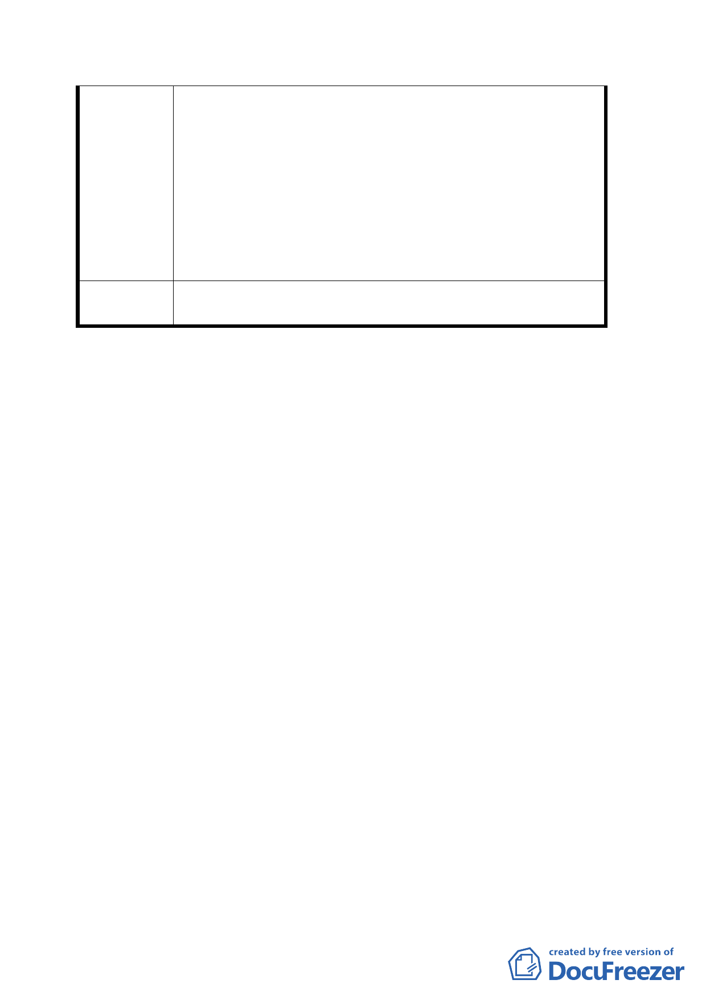

(四) 本案將導致全區及附近居民生活品質提升、物業產
值上揚。
(五) 本案將為全國下一波籌建安養機構狂潮、提供一個
足堪效法的典範。
三、堅持重點極致發揮：本區若以專一目標充分發揮，必
可達最佳效果。原案所提之「大街廓整體開發方式」
甚佳，更應將本區聯外交通併案處理，這樣才能引動
週邊老舊社區稱新改建的契機，更獲居民之全力配
合、建商之踴躍投入。
委 員 會 決 本計畫案原則通過。其他非屬都市計畫之建議留供將來規
議 劃建築時參考。
討論事項二
案名：變更台北市中山區北安路五三六巷第三種住宅區為人行
步道用地計畫案
說明：
一、本案係臺北市政府以九十二年十一月十八日府都二字第
○九二二四七八六一○三號函送到會，並自九十二年十
一月十九日起公開展覽三十天。
二、法令依據：都市計畫法第二十七條第一項第四款。
三、計畫範圍：詳計畫圖所示。
四、變更理由及內容：詳計畫說明書所示。
五、說明會日期：九十二年十一月二十七日（永安區民活動
中心）。
六、公民或團體陳情意見：計一件。
七、本案於九十三年一月十五日本會第五二三次委員會議決
議：「本案由陳委員威仁、李委員永展、徐委員木蘭、黃
委員武達、邊委員泰明、林委員志盈、黃呂委員錦茹組
成專案小組，並請李委員永展擔任召集人，對軍方土地
利用計畫及人行動線等詳予審查後，再提會討論」。
九